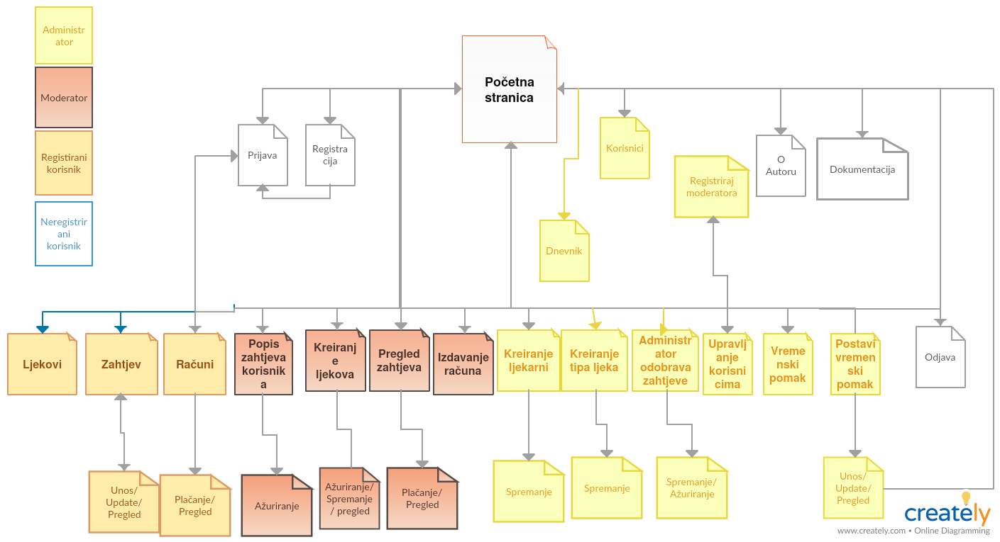

U projektu se trebalo napraviti sustav E-ljekarne. Stranica preko koje se može naručivati, plačati i zahtjevati određene lijekove. U kojoj se nalaze 4 uloge korisnika same stranice, i one se dijele na administratora, koji ima apsolutnu ulogu, te on upravlja samim sustavom. Moderatore koji isplaćuju dnevne račune, pregledava i odobravaju zahtjeve lijekova koji nisu na receptima(njih odobrava administrator). Uloga registriranog korisnika koji ima pravo poslati zahtjev pojedinog lijeka, pregled računa, registrirati i logirati se, te pretraživati trgovinom. Te zadnje, uloga neregistriranog korisnika, koja je podosta limitirana sa time što može raditi na samoj stranici. Opčirnije u navigacijskom dijagramu.
Susutav funckionira na način da postoje uloge. Ovisno o kojima, određena uloga ima pristup određenoj stranici. Svaki korisnik ima svoju ulogu. Korisnik se može registirirati u slučaju da nema već napravljen račun, te ulogirati. Naravno, i ne mora, ali u tom slučaju neće moći pristupiti određenim stranicama. Nakon registracija, korisniku se šalje mail, koji tek nakon što prihvati može se ulogirati u stranicu. Također, kod registracije, postoji Captcha preko koje se spriječavaju automati. Na prvi ulazak u samu stranicu, korinsnik mora prihvatiti uvjete korištenja, s kojim se radi kolačić s tajmerom od 2 dana. Na svaki novi ulazak korisnika u stanicu, taj kolačić se provjerava, te u slučaju da je istekao, korisniku će se ponovno pojaviti pitanje da ga prihvati. Rad sustava. Svako novo ažuriranje, ili neka promijena na stranici zapisuje se u dnevnik, kojem samo administrator može pristupiti. U projektnom rješenju koričteni su razni jezici, o kojima čemo malo više kasnije spomenuti. Svaka tablica na stranici, ima svojstva, poput sortiranja po kolonama, straničenje tablica koje imaju više od 7 elemenata, te pretraživanje samih tablica. Pristup odreženoj tablici ovisi o samoj ulozi korisnika. Sustav funckionira na način da administrator ima apsolutnu ulogu, te može sa svime upravljati, može izdavati ljekove, račune, recepte, vidjeti raznorazne statistike, znači ima cijeli pregled sustava. Također može kreirati, nove ljekove, ljekarne, korisnike, nove moderatore. Također može otključavati\zaključavati korisnički po želji. Moderator ima više ulogu kao trgovac, nema isti pristup kao i administrator, ali može kreirati nove ljekove, i izdavati dnevne račune. Takožer ima pregled svim zahtjevima, ali može odobravati samo one koji nisu preko recepta. Registrirani korisnik, može zahtjevati ljekove, kreirati nove zahtjeve i ima pregled na svim svojim računima. Takožer ih, ako želi može i platiti. Neregistrirani korisnik može samo pristupiti stranicama, dokumentacija, o autoru, početnoj, te može pristupiti popisu svih ljekarni sa ljekovima.
Glavne tablice našeg ERA modela jesu: korisnik, racun, zahtjev i ljekarna. Otprilike one čine naš glavni sustav. Sada, kako su one međusobno i smisleno povezane. Svaki korisnik može imati samo jednu ulogu, te svaki korisnik može na svoje ime imati više računa, dok račun može biti na samo jednog korisnika. Korisnik može poslati zahtjev za naručivanje lijeka. Svaki zahtjev može imati određeni status, preko kojeg se zapisuje trenutno stanje samog zahtjeva. Dali je on zaprimljen, potvrđen, odbijen itd... Svaki lijek mora imati barem jednu vrstu lijeka. Ljekarna, može imati jednog ili više moderatora, te ljekarna može imati jedan ili više lijeka u svojoj poslovnici. Također moderator može biti jedan ili više korisnika. Kasnije u objašnjenju rada samog sustava vidjet ćemo kako u praksi same tablice funckioniraju.
Donekle je već objašnjen u samom opisu projektnog riješenja. Jedino što je ostalo za spomenuti jest, da neregistrirani korisnik ima najmanji pristup podacima na stranici, dok registirani ima isti kao i neregistrirani, plus još nekim dodatnim stvarima. Moderator također, ima pristup svim podacima kao i prijašnji korisnici plus još nekim dodatnim. Dok administrator ima pristup svim svojstvima stranice. Prikazano na sljedečoj slici
Skripte na svakoj stranici možemo vidjeti da postoji php skripta. Njezini zadaci su isključivo spajanje i važenje podataka iz baze podataka, i prikaz u tablicama. Također služe za ažuriranje i upravljanje podacima. Dok Javascript, Ajax, služe isključivo za upravljanje na strani klijenta. Ajax, smo koristili kako bi se automatksi ažurirala tablica bez osvježavanja pojedine stranice.